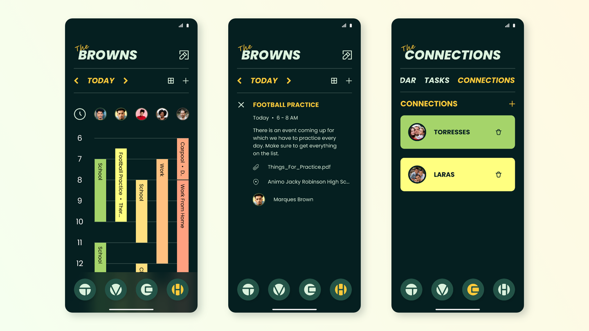
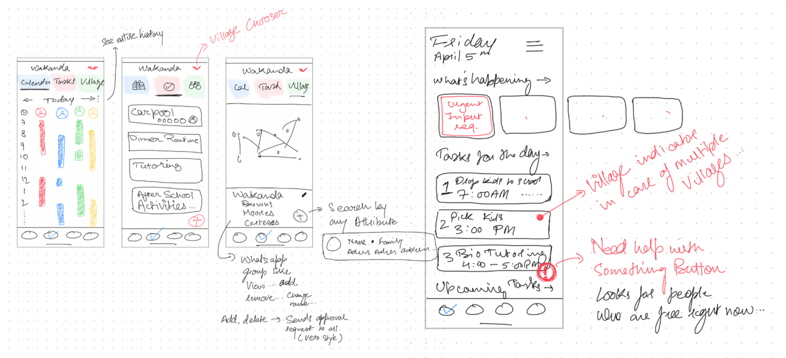
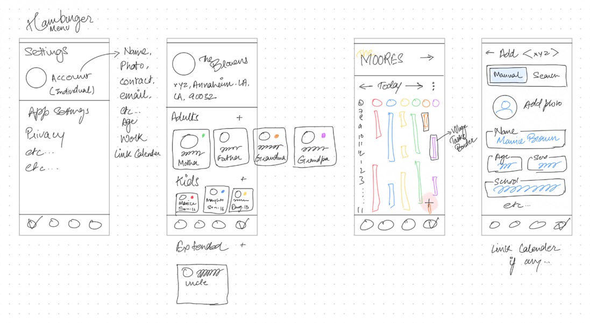
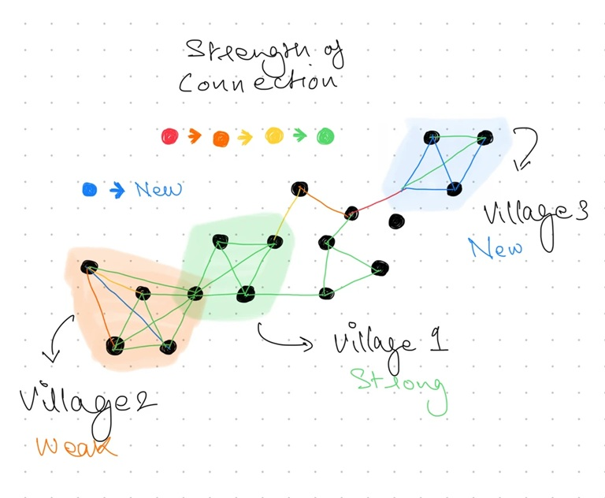
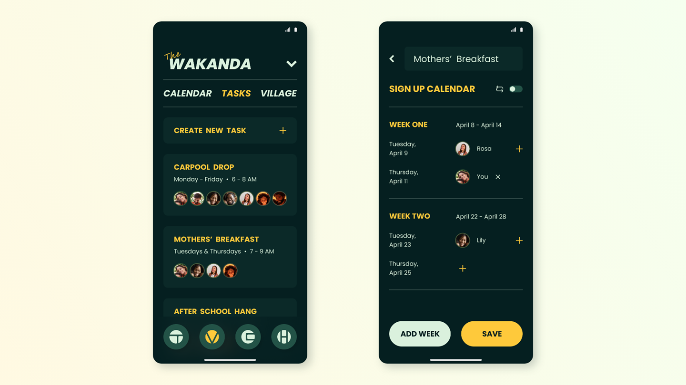
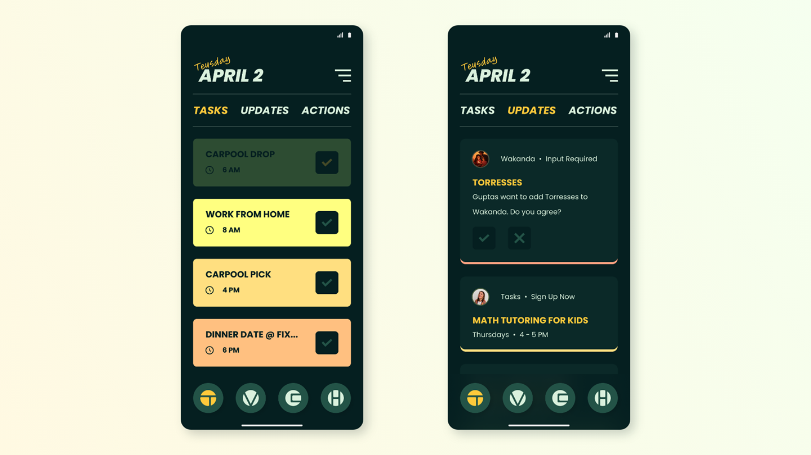

Challenge
The advent of capitalism, individualistic life approach, and resentment towards traditional parenting has given rise to many parenting approaches, like Permissive Parenting, Helicopter Parenting, Lawn-mower Parenting, etc. These parenting styles come with some serious behavioural issues in children, like insecurities, lack of resilience, increased chances of substance abuse and misconduct.
Most studies conclude that it is the time and involvement (appropriate amount) of people in the life of children, and children being given appropriate amounts of autonomy, that results in healthy individuals. Alloparenting (involvement of grandparents and other relatives), which is a form of traditional parenting, also shows better results in the overall healthy development of children.
Studies also show that kids who grow up in a village (not a literal village but a community of relatives, friends, and neighbors) grow up to be much more healthy individuals (mentally and physically) than their counterparts. Parents who share the load with their village (community) and ask for help also have better mental health and healthier parent-child relationships.
Solution
To create a design solution, an app, that will facilitate parents in building their village (community) and manage co-parenting. The app will focus on sharing parental responsibilities. The app will facilitate parents in scheduling tasks and sharing responsibilities via a shared village calendar. The app will also facilitate parents in interacting with their connections - households that are not part of their village. The app can also be used to maintain a household calendar.

Interviewing parents of kids below 18 highlighted that the biggest challenge they face is of scheduling. The modern busy lives makes it really hard to keep track of things. Parents do need help but they don't know where to look for it or who to ask; who is free at the moment and can help in urgent situations?
Some parents have a hard time finding and networking with other parents, especially if they have moved. Some parents also face difficulties in culturally adjusting their kids into the society.
Parents of kids older than 18 faced similar challenges when they were raising their kids. Though, in urgent situations or emergencies, it was harder to track people down as the times were less modern.
As a group of parents are sharing the responsibilities of kids, all actions should be transparent. Everyone shall know at all times what is happening in the village.
Everyone in the village is equally important and everyone's opinions matter. The design must be inclusive so that all actions are taken with the input of everyone.
The app will contain a lot of information which will be accessed by people who have busy schedules. Hence, the design should be minimalist and not contain any unnecessary information or interactions.
The design must be simple and intuitive so that it is easy to use for people of all age groups.


The Village Graph
The platform contains a village graph which highlights the user's village and showcases their connections up to second degree.

The graphic representation of the parental community help people build connections and trust. It helps expand the user's social circle with other parents and of their kids as well.
The graph is colour coded. For the connection lines, blue represents a new link. Further, it turns from red to green as the connection strengthens and the time passes. The villages are colored on the same palette based on the overall strength of their entailing connections.

Prototype

Perks of Village (Communal) Parenting:
Inclusivity: In modern times, parents have to navigate various tough conversations with their kids about different races, sexualities, cultures, communities, financial backgrounds, etc. They also need to ensure that their kids are exposed to diverse perspectives and experiences. Growing up in a village normalizes all the above-stated factors for kids, making them more inclusive.
Role Models: In a village, children create healthy bonds with multiple adults and learn from them. They are exposed to multiple careers and perspectives which helps in decision making and cognitive development.
Safety: The availability of a safe environment to explore gives children a sense of self and makes them feel secure. It also makes it easier for them to share their problems and feelings with adults.
Sensitive: Being around multiple families, familiarizes children with various struggles (financial, personal, etc.) and inculcates sensitivity and empathy towards such circumstances.
Sharing: Children learn to share resources and the importance of doing things together, especially the children who do not have siblings.
Equality & Understanding: Being around multiple styles of families (including LGBTQ+ parents) gives children an insight into different lifestyles. Children who do not have siblings of other genders can get familiarized with them in a village.
Older Generation & Experience: Older generations can become a part of the parental village and help the parents in taking care of the children. They can share their experiences with the parents and children accordingly. It also gives them an opportunity to be involved and enjoy the company. This can also help the older generations deal with their mental health issues and feelings of loneliness, if any.